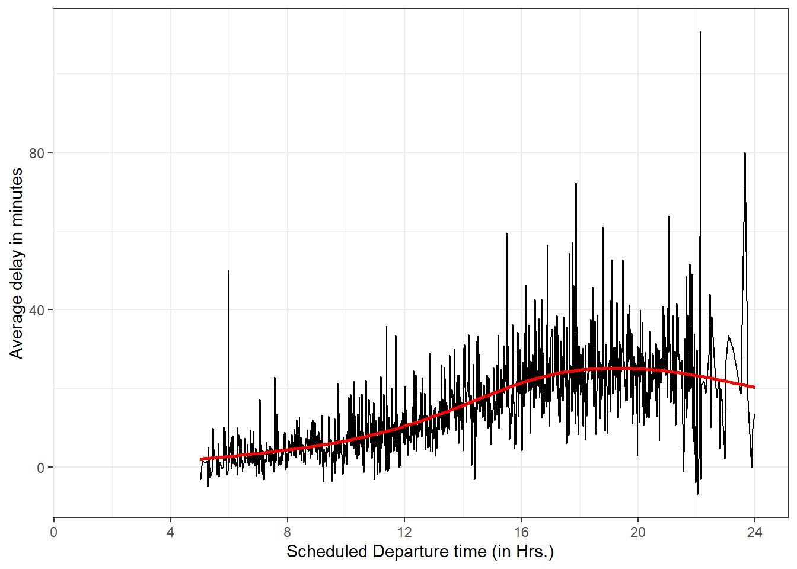

library(tidyverse)
library(nycflights13)
library(gt)
data("flights")Chapter 4 (Data Transformation)
4.2.5 Exercises
In a single pipeline for each condition, find all flights that meet the condition:
Had an arrival delay of two or more hours
flights |> filter(arr_delay >= 120)# A tibble: 10,200 × 19 year month day dep_time sched_dep_time dep_delay arr_time sched_arr_time <int> <int> <int> <int> <int> <dbl> <int> <int> 1 2013 1 1 811 630 101 1047 830 2 2013 1 1 848 1835 853 1001 1950 3 2013 1 1 957 733 144 1056 853 4 2013 1 1 1114 900 134 1447 1222 5 2013 1 1 1505 1310 115 1638 1431 6 2013 1 1 1525 1340 105 1831 1626 7 2013 1 1 1549 1445 64 1912 1656 8 2013 1 1 1558 1359 119 1718 1515 9 2013 1 1 1732 1630 62 2028 1825 10 2013 1 1 1803 1620 103 2008 1750 # ℹ 10,190 more rows # ℹ 11 more variables: arr_delay <dbl>, carrier <chr>, flight <int>, # tailnum <chr>, origin <chr>, dest <chr>, air_time <dbl>, distance <dbl>, # hour <dbl>, minute <dbl>, time_hour <dttm>Flew to Houston (IAH or HOU)
flights |> filter(dest %in% c("IAH", "HOU"))# A tibble: 9,313 × 19 year month day dep_time sched_dep_time dep_delay arr_time sched_arr_time <int> <int> <int> <int> <int> <dbl> <int> <int> 1 2013 1 1 517 515 2 830 819 2 2013 1 1 533 529 4 850 830 3 2013 1 1 623 627 -4 933 932 4 2013 1 1 728 732 -4 1041 1038 5 2013 1 1 739 739 0 1104 1038 6 2013 1 1 908 908 0 1228 1219 7 2013 1 1 1028 1026 2 1350 1339 8 2013 1 1 1044 1045 -1 1352 1351 9 2013 1 1 1114 900 134 1447 1222 10 2013 1 1 1205 1200 5 1503 1505 # ℹ 9,303 more rows # ℹ 11 more variables: arr_delay <dbl>, carrier <chr>, flight <int>, # tailnum <chr>, origin <chr>, dest <chr>, air_time <dbl>, distance <dbl>, # hour <dbl>, minute <dbl>, time_hour <dttm>Were operated by United, American, or Delta
flights |> filter(carrier %in% c("UA", "AA", "DL"))# A tibble: 139,504 × 19 year month day dep_time sched_dep_time dep_delay arr_time sched_arr_time <int> <int> <int> <int> <int> <dbl> <int> <int> 1 2013 1 1 517 515 2 830 819 2 2013 1 1 533 529 4 850 830 3 2013 1 1 542 540 2 923 850 4 2013 1 1 554 600 -6 812 837 5 2013 1 1 554 558 -4 740 728 6 2013 1 1 558 600 -2 753 745 7 2013 1 1 558 600 -2 924 917 8 2013 1 1 558 600 -2 923 937 9 2013 1 1 559 600 -1 941 910 10 2013 1 1 559 600 -1 854 902 # ℹ 139,494 more rows # ℹ 11 more variables: arr_delay <dbl>, carrier <chr>, flight <int>, # tailnum <chr>, origin <chr>, dest <chr>, air_time <dbl>, distance <dbl>, # hour <dbl>, minute <dbl>, time_hour <dttm>Departed in summer (July, August, and September)
flights |> filter(month %in% c(7, 8, 9))# A tibble: 86,326 × 19 year month day dep_time sched_dep_time dep_delay arr_time sched_arr_time <int> <int> <int> <int> <int> <dbl> <int> <int> 1 2013 7 1 1 2029 212 236 2359 2 2013 7 1 2 2359 3 344 344 3 2013 7 1 29 2245 104 151 1 4 2013 7 1 43 2130 193 322 14 5 2013 7 1 44 2150 174 300 100 6 2013 7 1 46 2051 235 304 2358 7 2013 7 1 48 2001 287 308 2305 8 2013 7 1 58 2155 183 335 43 9 2013 7 1 100 2146 194 327 30 10 2013 7 1 100 2245 135 337 135 # ℹ 86,316 more rows # ℹ 11 more variables: arr_delay <dbl>, carrier <chr>, flight <int>, # tailnum <chr>, origin <chr>, dest <chr>, air_time <dbl>, distance <dbl>, # hour <dbl>, minute <dbl>, time_hour <dttm>Arrived more than two hours late, but didn’t leave late
flights |> filter(dep_delay <= 0)# A tibble: 200,089 × 19 year month day dep_time sched_dep_time dep_delay arr_time sched_arr_time <int> <int> <int> <int> <int> <dbl> <int> <int> 1 2013 1 1 544 545 -1 1004 1022 2 2013 1 1 554 600 -6 812 837 3 2013 1 1 554 558 -4 740 728 4 2013 1 1 555 600 -5 913 854 5 2013 1 1 557 600 -3 709 723 6 2013 1 1 557 600 -3 838 846 7 2013 1 1 558 600 -2 753 745 8 2013 1 1 558 600 -2 849 851 9 2013 1 1 558 600 -2 853 856 10 2013 1 1 558 600 -2 924 917 # ℹ 200,079 more rows # ℹ 11 more variables: arr_delay <dbl>, carrier <chr>, flight <int>, # tailnum <chr>, origin <chr>, dest <chr>, air_time <dbl>, distance <dbl>, # hour <dbl>, minute <dbl>, time_hour <dttm>Were delayed by at least an hour, but made up over 30 minutes in flight
flights |> filter(dep_delay - arr_delay >= 30)# A tibble: 20,395 × 19 year month day dep_time sched_dep_time dep_delay arr_time sched_arr_time <int> <int> <int> <int> <int> <dbl> <int> <int> 1 2013 1 1 701 700 1 1123 1154 2 2013 1 1 820 820 0 1249 1329 3 2013 1 1 840 845 -5 1311 1350 4 2013 1 1 857 851 6 1157 1222 5 2013 1 1 909 810 59 1331 1315 6 2013 1 1 1025 951 34 1258 1302 7 2013 1 1 1153 1200 -7 1450 1529 8 2013 1 1 1245 1249 -4 1722 1800 9 2013 1 1 1610 1615 -5 1913 1948 10 2013 1 1 1625 1550 35 2054 2050 # ℹ 20,385 more rows # ℹ 11 more variables: arr_delay <dbl>, carrier <chr>, flight <int>, # tailnum <chr>, origin <chr>, dest <chr>, air_time <dbl>, distance <dbl>, # hour <dbl>, minute <dbl>, time_hour <dttm>
Sort
flightsto find the flights with longest departure delays. Find the flights that left earliest in the morning.The top 5 flights that has the longest departure delays are shown in Table 1 .
flights |> arrange(desc(dep_delay)) |> head(n = 5) |> select(year, month, day, dep_time, sched_dep_time, dep_delay, carrier, flight, origin) |> mutate(Day = as_date(paste(year, month, day, sep = "-"))) |> select(-year, -month, -day) |> relocate(Day, .before = dep_time) |> gt::gt()Table 1: 5 Flights with longest departure delays
Day dep_time sched_dep_time dep_delay carrier flight origin 2013-01-09 641 900 1301 HA 51 JFK 2013-06-15 1432 1935 1137 MQ 3535 JFK 2013-01-10 1121 1635 1126 MQ 3695 EWR 2013-09-20 1139 1845 1014 AA 177 JFK 2013-07-22 845 1600 1005 MQ 3075 JFK Sort
flightsto find the fastest flights. (Hint: Try including a math calculation inside of your function.)The speed of a flight can be found as
distance/air_time. The Table 2 displays the 5 fastest flights.flights |> arrange(desc(distance/air_time)) |> slice_head(n=5) |> select(year, month, day, distance, air_time, carrier, flight, origin, dest) |> gt()Table 2: 5 fastest Flights (by speed)
year month day distance air_time carrier flight origin dest 2013 5 25 762 65 DL 1499 LGA ATL 2013 7 2 1008 93 EV 4667 EWR MSP 2013 5 13 594 55 EV 4292 EWR GSP 2013 3 23 748 70 EV 3805 EWR BNA 2013 1 12 1035 105 DL 1902 LGA PBI Was there a flight on every day of 2013?
Yes, there was a flight on every day of 2013, because using
distinct()function, we find that there are 365 unique combinations ofyear,month, andday.flights |> distinct(year, month, day) |> count() |> as.numeric()[1] 365Which flights traveled the farthest distance? Which traveled the least distance?
The top 5 flights by the farthest distance traveled are shown in Table 3 .
flights |> arrange(desc(distance)) |> select(origin, dest, distance, air_time, carrier) |> # Distinct added to remove same flight (on different days) repeating in top 5 distinct(origin, dest, .keep_all = TRUE) |> slice_head(n = 5) |> gt()Table 3: 5 longest distance flights
origin dest distance air_time carrier JFK HNL 4983 659 HA EWR HNL 4963 656 UA EWR ANC 3370 418 UA JFK SFO 2586 366 UA JFK OAK 2576 330 B6 The 5 flights with least distance traveled are shown in
flights |> arrange(distance) |> select(origin, dest, distance, air_time, carrier) |> # Distinct added to remove same flight (which runs # on different days) repeating in top 5 distinct(origin, dest, .keep_all = TRUE) |> slice_head(n = 5) |> gt()Table 4: 5 shortest distance flights
origin dest distance air_time carrier EWR LGA 17 NA US EWR PHL 80 30 EV JFK PHL 94 35 9E LGA PHL 96 32 US EWR BDL 116 25 EV Does it matter what order you used
filter()andarrange()if you’re using both? Why/why not? Think about the results and how much work the functions would have to do.Although, in terms of output received, it does not matter in which order we use them, because when we run the function
filter()it removes the rows not required, but leaves the arrangement-ordering the same, i.e. the remaining rows move up.However, using
arrange()beforefilter()meansRwill have to arrange all the rows, and then we filter out only a few rows - thus meaning that more work will have to be done computationally.For computational efficiency, it would be better if we use
filter()first, then runarrange()only on the subset of rows remaining.Here’s the proof for this, using
system.time()function inRwhich tells how much time does anRexpression take to run. Here, I compare both functions using the logical operator>(greater than). Theelapsedtime comesTRUE, meaning that arranging first, and then filtering takes more time.system.time( flights |> arrange(distance) |> filter(air_time < 60) ) > system.time( flights |> filter(air_time < 60) |> arrange(distance) )user.self sys.self elapsed user.child sys.child FALSE FALSE TRUE NA NA
4.3.5 Exercises
Compare
dep_time,sched_dep_time, anddep_delay. How would you expect those three numbers to be related?We would expect
dep_delay=dep_time-sched_dep_time. Let us check this in the code, as well.flights |> mutate(calc = dep_time - sched_dep_time) |> mutate(match = calc == dep_delay, .keep = "used") |> summarise(Matching = sum(match, na.rm = TRUE), Total = count(flights)) |> mutate(Percentage = 100*Matching/Total)# A tibble: 1 × 3 Matching Total$n Percentage$n <int> <int> <dbl> 1 228744 336776 67.9The results indicate that 67.9% of the time, the comparison works out as expected. For others, there might be missing data issues (hence, we had to use
na.rm = TRUE) or, any other data error.Brainstorm as many ways as possible to select
dep_time,dep_delay,arr_time, andarr_delayfromflights.# Using variable names flights |> select(dep_time, dep_delay, arr_time, arr_delay) # Using starts_with() flights |> select(starts_with("dep"), starts_with("arr")) # Using column numbers flights |> select(4,6,7,9) # Using from, to, ie., ":" along with "!" to remove sched_ flights |> select(dep_time:arr_delay) |> select(!starts_with("sched")) # Using column numbers with : flights |> select(4:9, -5, -8)What happens if you specify the name of the same variable multiple times in a
select()call?If we specify the name of the same variable multiple times, the
dplyrpackage understands the mistake, and only produces one copy of the variable in the output. The place of the variable is the one that first appears in the code within theselect()function. Here are two examples:---flights |> select(dep_time, dep_time) |> slice_head(n=2)# A tibble: 2 × 1 dep_time <int> 1 517 2 533flights |> select(dep_time:dep_delay, sched_dep_time) |> slice_head(n=2)# A tibble: 2 × 3 dep_time sched_dep_time dep_delay <int> <int> <dbl> 1 517 515 2 2 533 529 4What does the
any_of()function do? Why might it be helpful in conjunction with this vector?variables <- c("year", "month", "day", "dep_delay", "arr_delay")The two functions,
any_of()andall_of()are called selection helpers. They help select variables contained in a character vector, such asvariables.In present scenario, the
any_of()can be used withvariablesvector to select these columns (or, remove these columns) from the flights data-set, as shown in the code below:---variables <- c("year", "month", "day", "dep_delay", "arr_delay") flights |> select(any_of(variables)) |> slice_head(n=2)# A tibble: 2 × 5 year month day dep_delay arr_delay <int> <int> <int> <dbl> <dbl> 1 2013 1 1 2 11 2 2013 1 1 4 20But, there is a difference between
any_of()andall_of(). As shown inRhelp,all_of()is for strict selection. If any of the variables in the character vector is missing, an error is thrown. But,any_of()doesn’t check for missing variables. It is especially useful with negative selections, when you would like to make sure a variable is removed. Here’s an example to demonstrate:---# Change "day" to "date" to delibertely cause a missing variable name variables <- c("year", "month", "date", "dep_delay", "arr_delay") # all_of() should not work flights |> select(all_of(variables)) |> slice_head(n=2)Error in `all_of()`: ! Can't subset columns that don't exist. ✖ Column `date` doesn't exist.# any_of() will still work flights |> select(any_of(variables)) |> slice_head(n=2)# A tibble: 2 × 4 year month dep_delay arr_delay <int> <int> <dbl> <dbl> 1 2013 1 2 11 2 2013 1 4 20Does the result of running the following code surprise you? How do the select helpers deal with upper and lower case by default? How can you change that default?
flights |> select(contains("TIME"))Yes, the running of this code surprises me because generally,
Ris very picky about upper-case vs. lower-case. Since"TIME"is not contained in any variable name, I expected it to throw an error. Yet, it returns all variables which contain"time".Thus, this means that the following
selecthelpers fromtidyselectpackage ignore the case of thematchprovided by default.starts_with(): Starts with an exact prefix.ends_with(): Ends with an exact suffix.contains(): Contains a literal string.matches(): Matches a regular expression.
To change this, we can set the argument
ignore.case = FALSE.Rename
air_timetoair_time_minto indicate units of measurement and move it to the beginning of the data frame.The following code does the job, as shown in the output:--
flights |> rename(air_time_min = air_time) |> relocate(air_time_min)# A tibble: 336,776 × 19 air_time_min year month day dep_time sched_dep_time dep_delay arr_time <dbl> <int> <int> <int> <int> <int> <dbl> <int> 1 227 2013 1 1 517 515 2 830 2 227 2013 1 1 533 529 4 850 3 160 2013 1 1 542 540 2 923 4 183 2013 1 1 544 545 -1 1004 5 116 2013 1 1 554 600 -6 812 6 150 2013 1 1 554 558 -4 740 7 158 2013 1 1 555 600 -5 913 8 53 2013 1 1 557 600 -3 709 9 140 2013 1 1 557 600 -3 838 10 138 2013 1 1 558 600 -2 753 # ℹ 336,766 more rows # ℹ 11 more variables: sched_arr_time <int>, arr_delay <dbl>, carrier <chr>, # flight <int>, tailnum <chr>, origin <chr>, dest <chr>, distance <dbl>, # hour <dbl>, minute <dbl>, time_hour <dttm>Why doesn’t the following work, and what does the error mean?
flights |> select(tailnum) |> arrange(arr_delay) #> Error in `arrange()`: #> ℹ In argument: `..1 = arr_delay`. #> Caused by error: #> ! object 'arr_delay' not foundThe above code does not work because the
select(tailnum)has removed all other variables (columns) from the tibble. Thus, whenarrange(arr_delay)runs, it is unable to find any variable by the name ofarr_delayin the tibble.The error means that object (i.e. variable)
'arr_delay'has not been found in the tibble by thearrange()function.
4.5.7 Exercises
Which carrier has the worst average delays? Challenge: can you disentangle the effects of bad airports vs. bad carriers? Why/why not? (Hint: think about
flights |> group_by(carrier, dest) |> summarize(n()))The overall carrier with worst average delays is F9, as seen from the code below:
flights |> group_by(carrier) |> summarise(avg_delay = mean(arr_delay, na.rm = TRUE)) |> slice_max(order_by = avg_delay, n = 1)# A tibble: 1 × 2 carrier avg_delay <chr> <dbl> 1 F9 21.9Yes, we can disentangle the effect of bad airports vs. bad carriers using the code below:---
flights |> group_by(dest, carrier) |> summarise(avg_delay = mean(arr_delay, na.rm = TRUE)) |> # taking the highest average delay flight at each airport slice_max(order_by = avg_delay, n = 1) |> ungroup() |> # for each airline, summarize the number of airports where it is # the most delayed airline summarise(n = n(), .by = carrier) |> slice_head(n=5)|> arrange(desc(n)) |> rename(Carrier = carrier, `Number of Airports` = n) |> gt()Table 5: The airlines which have highest average delay at the maximum number of Airports
Carrier Number of Airports EV 42 B6 20 UA 14 AA 6 FL 2 Find the flights that are most delayed upon departure from each destination.
We can use the following codes (either one works, and the code checks this equality of results) to find the flight with highest departure delay (
dep_delay) for each destination (Table 6).Code
# Option 1: Group by "dest" and then use slice_max a = flights |> group_by(dest) |> slice_max(n=1, order_by = dep_delay, na_rm = TRUE) |> select(dest, flight, origin, dep_delay, month, day) |> arrange(desc(dep_delay), desc(flight)) # Option 2: Directly use slice_max() with "by" argument b = flights |> slice_max(n=1, order_by = dep_delay, by = dest, na_rm = TRUE) |> select(dest, flight, origin, dep_delay, month, day) |> arrange(desc(dep_delay), desc(flight)) # Check results sum(a != b)[1] 0Code
# Display results b |> slice_head(n=5) |> gt() |> cols_label(dest = "Destination", flight = "Flight", origin = "Origin Airport", dep_delay = "Departure Depay (minutes)", month = "Month", day = "Date") |> cols_align(align = "center")Table 6: Flights with highest departure delay; displayed here only for 5 destinations highest departure delay
Destination Flight Origin Airport Departure Depay (minutes) Month Date HNL 51 JFK 1301 1 9 CMH 3535 JFK 1137 6 15 ORD 3695 EWR 1126 1 10 SFO 177 JFK 1014 9 20 CVG 3075 JFK 1005 7 22 How do delays vary over the course of the day. Illustrate your answer with a plot.
The following graph of average delay (on y-axis) plotted against scheduled departure time (on x-axis) shows the overall trend that the average delays rise over the course of the day to hit a peak around 6 pm.
Note: The scheduled departure time is not accurate in the data-set, since it is written in
hhmmformat, and thus is not continuous variable. For example, 1:59 am is 159, and then 2:00 am is 200. So there are no values in 60s, 70s, 80s, 90s. I rectified this using mathematical operators%/%and%%to obtain hours and minutes, and then combined them. Now, the result is a smoother graph.flights |> group_by(sched_dep_time) |> summarise(avg_delay = mean(dep_delay, na.rm = TRUE)) |> mutate(hour = sched_dep_time %/% 100, minute = sched_dep_time %% 100) |> mutate(time_hr = hour + minute/60) |> ggplot(aes(x = time_hr, y = avg_delay)) + geom_line() + geom_smooth(color = "red", se = FALSE) + theme_bw() + labs(x = "Scheduled Departure time (in Hrs.)", y = "Average delay in minutes") + scale_x_continuous(breaks = seq(from = 0, to = 24, by = 4))Figure 1: Graph showing average delays over the course of the day at various scheduled times 
What happens if you supply a negative
ntoslice_min()and friends?The inbuilt
Rhelp tells me that “A negative value ofnwill be subtracted from the group size. For example,n = -2with a group of 5 rows will select 5 - 2 = 3 rows.”Here’s an example to explain. First, I create a tibble
a(shown in Table 7) to contain the average departure delay from JFK airport to 10 destinations.a = flights |> filter(origin == "JFK") |> group_by(origin, dest) |> summarise(avg_delay = mean(dep_delay, na.rm = TRUE)) |> arrange(desc(avg_delay)) |> slice_head(n = 10) |> ungroup() gt(a) |> fmt_number(decimals = 2)Table 7: The average departure delay from JFK airport to 10 destinations
origin dest avg_delay JFK CVG 27.35 JFK SDF 23.98 JFK EGE 23.44 JFK SAT 23.41 JFK MCI 23.09 JFK CMH 22.02 JFK ORD 21.55 JFK MSP 21.33 JFK DEN 20.10 JFK STL 20.00 Now, I use
slice_minfunction with argumentsn = 2and then, with argumentsn = -2to show the difference in output. The first coden = 2displays the two rows with minimum average delay. The second code,n = -2displays the (total rows minus 2), i.e., 8 rows with minimum average delay.# n=2 displays the two rows with minimum average delay a |> slice_min(n = 2, order_by = avg_delay)# A tibble: 2 × 3 origin dest avg_delay <chr> <chr> <dbl> 1 JFK STL 20 2 JFK DEN 20.1# n=-2 displays the (total rows minus 2), i.e., 8 rows with minimum average delay a |> slice_min(n = -2, order_by = avg_delay)# A tibble: 8 × 3 origin dest avg_delay <chr> <chr> <dbl> 1 JFK STL 20 2 JFK DEN 20.1 3 JFK MSP 21.3 4 JFK ORD 21.6 5 JFK CMH 22.0 6 JFK MCI 23.1 7 JFK SAT 23.4 8 JFK EGE 23.4Explain what
count()does in terms of the dplyr verbs you just learned. What does thesortargument tocount()do?Instead of using the
group_by()andsummarize()verbs, thecount()function can be used as a shortcut to quickly compute the number of unique values of each combination of a variable occurring in the data-set. Thus,count()helps us to calculate the number of values (rows) for each unique combination of variables which have been used as an argument in thecount()function.The inbuilt help in
Rtells us thatdf %>% count(a, b)is roughly equivalent todf %>% group_by(a, b) %>% summarise(n = n()).Further, the
sort = TRUEargument incount()tellsRto display the largest groups (by count, i.e.,n) to be displayed at the top.Here’s an example. The following code displays the 5 routes with maximum number of flights. For example, JFK to LAX had 11,262 flights in 2013. We can achieve this by using
group_by(),summarize(),arrange()andungroup(). Or, we can simply achieve the same result with a single functioncount().flights |> group_by(origin, dest) |> summarise(n = n()) |> arrange(desc(n)) |> ungroup() |> slice_head(n = 5)# A tibble: 5 × 3 origin dest n <chr> <chr> <int> 1 JFK LAX 11262 2 LGA ATL 10263 3 LGA ORD 8857 4 JFK SFO 8204 5 LGA CLT 6168flights |> count(origin, dest, sort = TRUE) |> slice_head(n = 5)# A tibble: 5 × 3 origin dest n <chr> <chr> <int> 1 JFK LAX 11262 2 LGA ATL 10263 3 LGA ORD 8857 4 JFK SFO 8204 5 LGA CLT 6168Suppose we have the following tiny data frame:
df <- tibble(x = 1:5, y = c("a", "b", "a", "a", "b"), z = c("K", "K", "L", "L", "K") )Write down what you think the output will look like, then check if you were correct, and describe what
group_by()does.df |> group_by(y)In my understanding, the output should look the same as
dfexcept that on top of it, a line mentioning that data is grouped byyshould appear. When we run the code, it shows the following header# A tibble: 5 X 3and#Groups: y[2]. Thus, there are two groups formed by two unique values of variabley, i.e.,aandb.df |> group_by(y)# A tibble: 5 × 3 # Groups: y [2] x y z <int> <chr> <chr> 1 1 a K 2 2 b K 3 3 a L 4 4 a L 5 5 b KWrite down what you think the output will look like, then check if you were correct, and describe what
arrange()does. Also comment on how it’s different from thegroup_by()in part (a)?df |> arrange(y)The function
arrange()re-orders the data-frame rows in ascending order of the variable mentioned, i.e.y. So, I expect the output to be thedftibble with ascending order of variabley. The ties will be arranged in the same order as they appeared in the original data-frame.df |> arrange(y)# A tibble: 5 × 3 x y z <int> <chr> <chr> 1 1 a K 2 3 a L 3 4 a L 4 2 b K 5 5 b KWrite down what you think the output will look like, then check if you were correct, and describe what the pipeline does.
df |> group_by(y) |> summarize(mean_x = mean(x))The output should display the mean values of
xfor different values ofy. Fory = a, I expectmean_x = (1+3+4)/3 = 2.67and fory = b, I expectmean_x = (2+5)/2 = 3.5. I expect the output to be a 2 X 2 tibble with first columnyand second columnmean_x.df |> group_by(y) |> summarize(mean_x = mean(x))# A tibble: 2 × 2 y mean_x <chr> <dbl> 1 a 2.67 2 b 3.5Write down what you think the output will look like, then check if you were correct, and describe what the pipeline does. Then, comment on what the message says.
df |> group_by(y, z) |> summarize(mean_x = mean(x))Now, I expect
Rto form groups of various combinations ofyandz, and then display average value ofxfor each combination. The output should be a tibble of 3 X 3, and still containing two groups ofy.df |> group_by(y, z) |> summarize(mean_x = mean(x))# A tibble: 3 × 3 # Groups: y [2] y z mean_x <chr> <chr> <dbl> 1 a K 1 2 a L 3.5 3 b K 3.5Write down what you think the output will look like, then check if you were correct, and describe what the pipeline does. How is the output different from the one in part (d).
df |> group_by(y, z) |> summarize(mean_x = mean(x), .groups = "drop")I think the output will still be a 3 X 3 tibble with same values as answer from Question 6 (d), i.e. displaying average values of
xfor different combinations ofyandz. But, now the remaining grouping, i.e., ofywill be dropped from the output. So the output is visually the same, but now it is an un-grouped tibble, rather than the grouped tibble output of Question 6 (d).df |> group_by(y, z) |> summarize(mean_x = mean(x), .groups = "drop")# A tibble: 3 × 3 y z mean_x <chr> <chr> <dbl> 1 a K 1 2 a L 3.5 3 b K 3.5Write down what you think the outputs will look like, then check if you were correct, and describe what each pipeline does. How are the outputs of the two pipelines different?
# Code Chunk 1 df |> group_by(y, z) |> summarize(mean_x = mean(x)) # Code Chunk 2 df |> group_by(y, z) |> mutate(mean_x = mean(x))The answers should be different because
summarize()collapses all the rows for a unique combination of grouped variables to produce one summary row. On the other hand,mutate()preserves each row of the original data-frame (or, tibble) and produces and additional variable with mean ofxto be entered in each row.Thus, I expect the
# Code Chunk 1to generate a tibble of 3 X 3 (like the output in Question 6(d), while I expect the# Code Chunk 2to generate a tibble of 5 X 4, with the 4th column ofmean_xhaving different values for each unique combination ofyandz.Further, I expect that the
# Code Chunk 1will re-order the output in ascending of order grouping variables. But, the# Code Chunk 2will preserve the original ordering of the rows as in the originaldftibble.# Code Chunk 1 df |> group_by(y, z) |> summarize(mean_x = mean(x))# A tibble: 3 × 3 # Groups: y [2] y z mean_x <chr> <chr> <dbl> 1 a K 1 2 a L 3.5 3 b K 3.5# Code Chunk 2 df |> group_by(y, z) |> mutate(mean_x = mean(x))# A tibble: 5 × 4 # Groups: y, z [3] x y z mean_x <int> <chr> <chr> <dbl> 1 1 a K 1 2 2 b K 3.5 3 3 a L 3.5 4 4 a L 3.5 5 5 b K 3.5Note: It is only by chance that the
mean_xis 3.5 for both combinations:y=b, z=K,mean_x = (2+5)/2 = 3.5y=a, z=L,mean_x = (3+4)/2 = 3.5